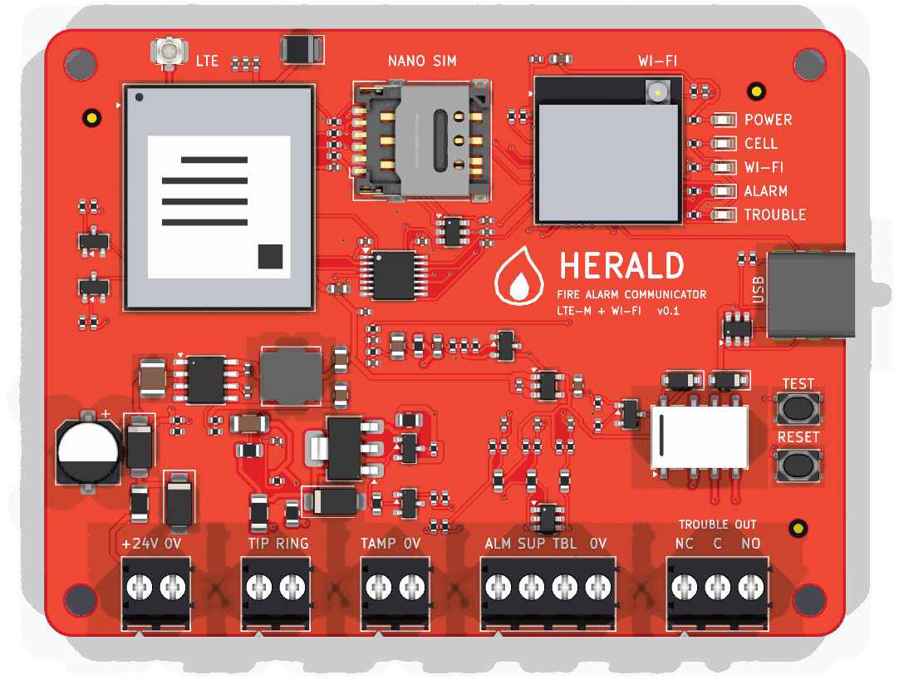
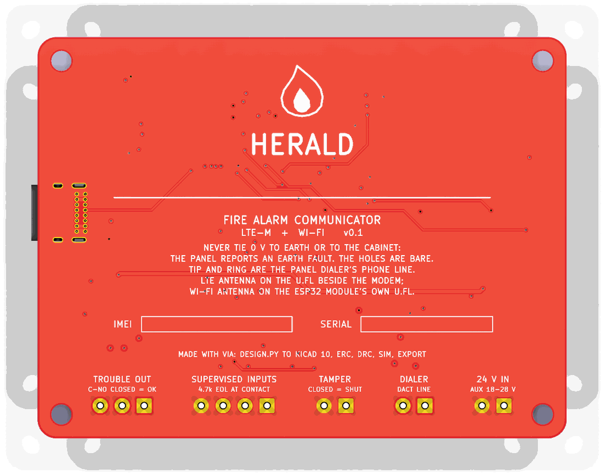

Examples · examples/fire-alarm-communicator/v0.1
Herald
A fire alarm communicator
Herald sits in a cabinet beside a fire alarm control panel and reports what the panel reports to a monitoring station: over LTE-M first, over Wi-Fi when the cell path is down. It takes the panel's signals 2 ways. It answers the panel's own phone dialer as if it were the phone line, and it reads 3 supervised relay contacts. A relay tells the panel when Herald itself is in trouble.
- v0.1
- 84.4 × 64 mm
- 4 layers
- 127 parts
- 805 track segments
- 80 vias
Drag to turn the board. KiCad's render of it, 36 views, 10 degrees apart.


The hard parts
What is hard about it, and where each part lives
A fire panel reports by phone, and there is no phone line
J2 is the panel dialer's line. Q3 (BCP53) and Q4 (MMBT3906) feed it a current-limited loop from the 24 V input: Q4 holds 0.55-0.75 V across R18 (27 ohm), 20 to 28 mA. R22 (47 ohm) in the return reads the loop current, so the ESP32 sees the dialer go off hook. The ESP32 then plays dial tone, the handshake and the kissoff from a PWM pin through 2 RC poles (R25-R27, C26-C28), and hears the dialer's DTMF digits on an ADC pin through C29 and R28 onto a mid-rail bias. sim/tone_out.cir and sim/dtmf_in.cir hold each level at every corner.
DTMF without a DTMF chip
firmware/src/dtmf.c runs a Goertzel filter per DTMF frequency over 25.6 ms windows, 12.8 ms apart, at 8 kHz. It takes and refuses what ITU-T Q.24 (Table A-1) says a receiver must: 0 to -25 dBm, the high tone 4 dB over to 8 dB under the low one, 1.5 % off frequency but not 3.5 %, 40 ms digits but not 23 ms ones. The host tests play all 16 keys and a whole Contact ID call through it.
A panel that reports by relay
3 supervised inputs on J3. Each loop ends in a 4.7k resistor across the panel's contact, so the ADC tells a closed contact, a whole loop and a cut wire apart. R32 (4.7k) pulls each loop up, R31 (100) meets the field wiring, U8 clamps it. sim/zone_*.cir hold every reading 200 mV or more from the firmware's thresholds at every corner.
The panel must know when Herald fails
K1 (Omron G6K-2F-Y) is held on while Herald is healthy. A lost supply opens it, and so does a reset: R46 holds Q6 off until the firmware drives it. The panel sees its supervisory or trouble input change. Both poles run in parallel.
2 paths to the station
U3, a Quectel BG95-M1 (LTE-M), with its nano SIM (J5) and antenna connector (J4). The ESP32-S3's own Wi-Fi is the second path; its antenna is on the module's u.FL. The BG95's I/O is 1.8 V: U4 (TXS0104E) carries its UART, STATUS and RI to the ESP32's 3.3 V.
When neither path works
Q5 (LINE_EN) lets the firmware drop the line feed. The panel then sees no phone line and reports its own communication trouble, the way it would for a cut line. R21 holds the feed off while the ESP32 is in reset.
The panel's 0 V must not touch the cabinet
A fire panel watches for an earth fault: any path from its wiring to earth. The 4 mounting holes are bare, and nothing ties GND to them. The back of the board says so.
Explore the board
Every track and part of the routed board, drawn from its file
The board as examples/fire-alarm-communicator/v0.1/herald.kicad_pcb holds it: four copper layers, 805 track segments, 80 vias and 85 nets. Point at a pad to see its part, and click a track, a via or a pad to follow its connection across the board.
Drag to move. Pinch, or hold Ctrl and scroll, to zoom.
What is open
What is still to be done on this board
- Firmware. The zone classifier, the hook, the DTMF decoder and the Contact ID call are written and tested on the host. The tone sequencer, the ESP32's ADC sampling, the BG95's AT commands, the station's protocol over LTE-M and Wi-Fi, the trouble relay's watchdog and the status lights are not written. Nothing has run on a board.
- No station protocol is chosen. Monitoring stations take events over IP in SIA DC-09 or a receiver's own format; which one, and its encryption, is the next decision.
- Listings. A communicator that a fire alarm system relies on is listed to UL 864 (or the local equivalent) as part of that system. This board has been through none of it: no surge test, no supervision timing check, no listing.
- The line feed's on-hook voltage is the 24 V input, about 23 V. Some dialers want more before they call a line good; read the panel's manual. A converter to 48 V would cover every dialer, and is the change for v0.2 if a panel asks for it.
- The BG95's peak current. The supply is sized for 2 A bursts (U1 is a 3 A buck, C9 100 uF); the BG95-M1's own peak was not read from a datasheet: the copy read gives a figure only for the M3 and M5.
- The relay's coil polarity follows KiCad's G6K symbol (A1 positive). The G6K is a polarised relay; check A1 against Omron's drawing (pin 1, coil +) before ordering.
- The schematic is wired, ERC 0 errors and 0 warnings, and laid out by
design.py'slay_out_schematic(): each support part beside the pin it serves. It is not arranged by hand: a few wires in the modem and phone-line blocks run long. - Not ordered. No board has been made and no part has been priced.
Three more in its README.